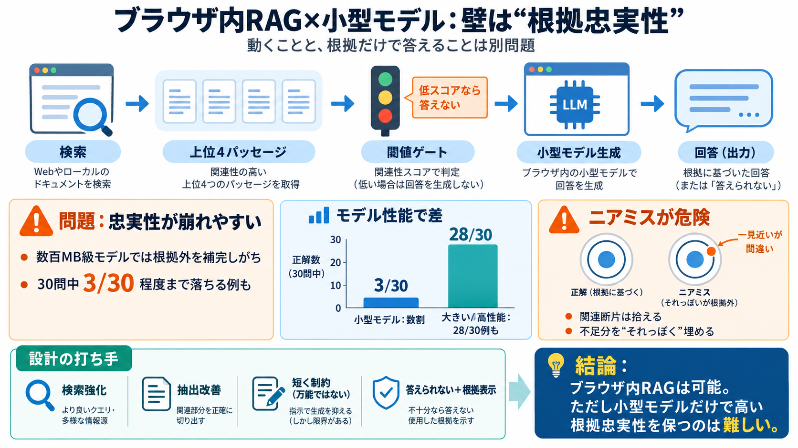

Building a Serverless RAG AI App with Java WebAssembly, WebGPU, and Local LLMs
The interesting observation in 2026 is that none of these taxes are fundamental any more. Browsers have quietly become c…

小型言語モデルをクライアント側で動かすRAGは魅力的だが、「根拠に忠実」かは別問題になる。
数百MB級の小型モデルでは、根拠付き要約でも忠実性が崩れやすい。
RAG（Retrieval-Augmented Generation）は「検索で根拠を集め、生成で答える」仕組みだが、生成が根拠から外れると失敗になる。
関連パッセージを抽出し、根拠テキストにする。
根拠だけを使って要約・回答するはず。
作者は、自分のブログをブラウザで検索し、トップ4の根拠だけを読み、小型モデルに要約・回答させる実装を作った（サーバーなし）。
セマンティック検索で関連パッセージ上位4を取得。
閾値（スコア）が低いならモデルを呼ばず「見つからない」。
Web Worker上で transformers.js を用い、小型モデルを実行。
最大2文＋「その4つだけ」を使うようプロンプトで強制。
評価の結論は「ブラウザで扱えるサイズ（数百MB以下）の小型モデル」では、根拠への忠実性が大きく崩れる、というものだった。
小型モデル（既製）
トップ4根拠＋最大2文
忠実回答が多くて数割まで
質問30件中、忠実が「3/30程度」にまで落ちるモデル群が中心。
より大きいモデルや、高性能モデル（API）では同条件でも忠実性が高いことが示された。
28/30のように高い忠実性。
高性能側として良好。
小型モデルは「近いが微妙に違う質問（ニアミス）」で、根拠にない情報を“補完”しやすい。
検索が“関連しそうな記事断片”を拾う。
小型モデルが不足分を「それっぽく埋める」可能性が上がる。
回答文数を増やしても、小型モデルでは改善どころか悪化しやすい傾向が確認された。
失敗率は下がり得るが、底は残る
作り話（創作）確率が上がる傾向
モデルが根拠外に出る癖が消えにくい
単に生成モデルを縛るだけでは限界があり、検索側（関連度）と、渡す根拠パッセージの質が結果を左右する。
関係ない質問は弾ける。
関連度スコアリングや抽出（段落選定）を改善する必要がある。
本稿から読み取れる中心論点を、根拠忠実性に関わる順に圧縮する。
サーバーなしでも“動く”が、忠実性は保証されない。
関連断片を手がかりに、根拠外を補完しやすい。
短文化でも限界があり、長文化で悪化し得る。
閾値・関連度・パッセージ選定が結果を左右。
用途次第で、APIや大きいモデルが有利。
“答えられない”を返し、根拠を見せる思想が最低要件。
ダウンロード配布（クラウド配信）とAPI推論のコストは、呼び出し回数や運用次第で逆転する。
モデルを数百MB単位で配る（キャッシュ/容量が効く）。
毎回呼ぶ費用が積み上がるが、高性能で忠実性が稼げる。
筆者の強みは、忠実性（faithful / unsupported / non-answer）で実測し、ブラウザ制約を最初から織り込んだ点にある。
30問・忠実性判定・文数実験で再現性がある。
データ/検索方式/評価基準に依存し、一般化には追加検証が要る。
単機能タスクに合わせたファインチューニング（“できない”を言う役割学習）と、検索・抽出の改善。
ブラウザ内RAGは実装できても、小型モデルだけで“根拠付き要約”の忠実性を高く保つのは難しい。
根拠が十分・ニアミスが少ない
近い話題・根拠が薄い
検索強化／抽出改善／役割学習
The interesting observation in 2026 is that none of these taxes are fundamental any more. Browsers have quietly become c…
Photo by Jackson Sophat on Unsplash Diego Betto · September 29, 2026 · 12 min di lettura # WebGPU and Client-Side AI: …
### WebGPU WebGPU is a graphics API that's built for ML workloads. It delivers major speed improvements over Wasm, and …
## Benchmark Results ### Text Embedding: all-MiniLM-L6-v2 For small embedding models processing short input sequences …
Microsoft’s small model consumes only 3.5 GB of VRAM at Q4\_K\_M and generates over 60 tokens per second on virtually an…